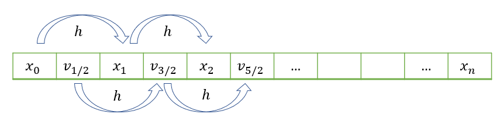

Junkyard¶
Let us first import the relevant packages that will be required for the below coding problems:
Multi-stage methods - Coding challenge¶
You can find hidden the various functions described in the previous chapter that are being used to solve the challenge.
Problem 2 : 1D heat equation with Dirichlet boundary conditions¶
Use the central differences formula, to set up a system of algebraic equations for the value of the nodes \([u_1,u_2,...,u_n]\) in the following problem, ensuring that you enforce the boundary conditions at the endpoints
Solve and plot your solution.
LEAPFROG: Simple harmonic motion¶
We consider the equation of motion for a particle of unit mass moving in one dimension under the influence of a restoring force \(F(x)=-x\). The particle is initially at rest at a displacement of \(x=1\), and we will solve for motion during the first 100 seconds using discretisation with a time step \(\Delta t =0.1\) The equations are given by:
By using central difference formulas with a half-step \(\Delta t/2\), we can obtain:
This is called a “leapfrog’” method, because the successively computed solutions for \(x\) and \(v\) are obtained at staggered positions, as illustrated in the schematic diagram below. Use this approach to obtain solutions for \(x(t)\) and \(v(t+\Delta t/2)\). To get your algorithm started, you can take \(v_{-1/2}=0\).
{kind=link}
Plot \((v^2+x^2-1)/2\), which provides the difference between the estimated energy and exact (analytic) energy. To calculate \(v(t)\) you can use \(v(t) = \frac{v(t-\Delta t/2)+v(t+\Delta t/2)}{2}.\)
1D diffusion¶
Enceladus is a small, icy moon of Saturn, which has been observed to emit molecules of water from “cracks” in its surface. The following differential equation represents the competition between outward diffusion of water molecules from the surface and destruction due to ionization:
In this equation, \(r\) is the radial distance from the centre of the moon, \(c\) is the steady state concentration of water molecules, and \(\beta_{LOSS}\) represents the relative importance of ionization compared to diffusion. We will take
Write down a discretised form of these equations, using a central difference scheme.
Solve the discretised system with 50 grid points simultaneously using a matrix method.
Solve the discretised system with 50 grid points using a Gauss-Seidel technique. Determine the number of iterations required for agreement with your part (2) solution to within \(10^{-4}\).
Solution
Part 1: Discretisation
We can also eliminate a factor of \(\frac{r_i}{\Delta r^2}\) to give:
Part 2: Matrix method
Grouping together terms gives (for example):
n=50; bloss=0.01; % Values defined in the question
r=linspace(1,50,n); % Set up the radial coordinate
hr=r(2)-r(1); % Determine the grid spacing
M = zeros(n,n); % Construct the grid
% CONSTRUCTION OF COEFFICIENTS FOR INTERIOR NODES
for k=2:n-1
M(k,k-1)=(r(k)-hr);
M(k,k)=-(2*r(k)+bloss*hr^2*r(k));
M(k,k+1)=(r(k)+hr);
end
% alternative approach using diag:
% rint = r(2:n-1);
% diag(rint-hr,-1)+diag([1,-2+bloss*hr^2*rint,1]) + diag(rint+hr,1)
% CONSTRUCTION OF COEFFICIENTS FOR BOUNDARY NODES
M(1,1)=1; M(end,end)=1;
% CONSTRUCTION OF RHS
b=zeros(n,1);b(1)=1;b(n)=0.1; % interior + boundary
sol1=(M\b).';
Part 3: Gauss-Seidel method
% Set up an initial grid for the solution
c=zeros(1,n); c(1) = 1; c(end)=0.1;
for j=1:1000 %bound on maximum number of iterations
for k=2:n-1
c(k) = ((r(k)+hr)*c(k+1) +(r(k)-hr)*c(k-1))/(2*r(k)+bloss*hr^2*r(k));
end
if norm(c-sol1)<1e-4
fprintf('Converged after %d iterations,',j)
break
end
end
% Plots
figure
subplot(2,1,1)
plot(r,sol1,'b')
title('Solution by Matrix method')
subplot(2,1,2)
plot(r,c,'r')
title('Solution by Gauss-Seidel method')
Solution
clear;
c = 0.2; g=0.5; L = 2; T = 4; % given parameters
Nt=81; Nx=200;
x = linspace(0,L,Nx); % discretisation of spatial dimension
t = linspace(0,T,Nt); % discretisation of spatial parameter
Dt=T/(Nt-1); Dx=L/(Nx-1);
r=c*Dt/Dx % ensure it's less than 1
F=zeros(Nt,Nx);
F(1,:)=sin(2*pi*x); %phi(0,x)
F(2,:) = sin(2*pi*(x-c*Dt)); %phi(Dt,x) - see comment at end
%w=sqrt(c^2*(2*pi)^2-g^2/4);
%cp=w/2/pi;
%F(2,:)=exp(-g/2*Dt)*sin(2*pi*(x-cp*Dt));
K0=(1-g*Dt/2); K2=(1+g*Dt/2); %constants appearing in update rule
for i=2:Nt-1
f=F(i,:);
neigh=circshift(f,1)-2*f+circshift(f,-1);
F(i+1,:)=(2*f+r^2*neigh-K0*F(i-1,:))/K2;
end
surf(x,t(1:5:end),F(1:5:end,:),'EdgeColor','none')
xlabel('x');ylabel('t');zlabel('\phi')
plot(t,max(F,[],2)/max(F(1,:)))
xlabel('t');ylabel('\phi_{max}');
More hyperbolic problems¶
Sine-Gordon
Alternatively, using a simultaneous equations technique
The function cdiffM below was written to solve the Poisson problem
using a matrix method for any possible combination of boundary conditions. The function sets up the coefficient matrix for the problem \(A\Phi=F\), where \(F,\Phi\) are the function value and unknown solution at each grid node \((x,y)\), arranged as vectors. Array \(A\) is the (sparse) coefficient matrix that relates each node to its neighbours using the five-point formula. The boundary equations are modified to use any specified boundary conditions.
new section¶
Schr”{o}dinger equation
General form¶
Or, to a general second order PDE
The solution can only be found in the region between the characteristic drawn through the initial domain \(D\). The solution at all points in space is determined by the points they are projected from.
D’Alembert problem,¶
Generally use forward stepping (do first!)
\(x=0: \quad u(0,0)=2e^{-L^2/4}\) \(x=L: \quad u(0,L)=2e^{-L^2/4}\)
(both very small)